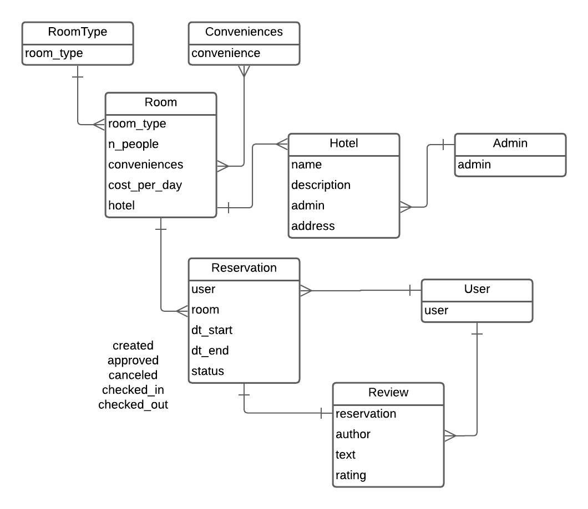

Лабораторная часть
Приложение для бронирования столиков в ресторанах
Модель БД

Модели Django
from datetime import datetime
from django.contrib.auth.models import User
from django.core.validators import MaxValueValidator, MinValueValidator
from django.db import models
from rest_framework.exceptions import ValidationError
from restaurant.utils import time_from_index
# Create your models here.
class Restaurant(models.Model):
owner = models.ForeignKey(User, on_delete=models.CASCADE)
name = models.CharField(max_length=100)
description = models.TextField()
address = models.CharField(max_length=250)
def __str__(self):
return self.name
class Table(models.Model):
table_number = models.PositiveIntegerField()
n_people = models.PositiveIntegerField()
restaurant = models.ForeignKey(Restaurant, on_delete=models.CASCADE, null=True)
def __str__(self):
return f'Table {self.table_number} at {self.restaurant.name}'
class Reservation(models.Model):
user = models.ForeignKey(User, on_delete=models.CASCADE)
table = models.ForeignKey(Table, on_delete=models.CASCADE)
dt_created = models.DateField(auto_now_add=True)
dt_reservation = models.DateField()
"""
Suppose restaurants work for 12 hours, bookings must be in 30
minute intervals. That way, the booking start and end may be denoted
as integers from 0 to 23 (cannot start booking when restaurant closes)
"""
time_start = models.PositiveIntegerField(
validators=[MaxValueValidator(23)],
help_text="The start time of the booking"
)
time_end = models.PositiveIntegerField(
validators=[MaxValueValidator(24),
MinValueValidator(1)],
help_text="The start time of the booking"
)
n_people = models.PositiveIntegerField()
comment = models.TextField(blank=True)
def clean(self):
super().clean()
# if the reservation ends before start
if self.time_end < self.time_start:
raise ValidationError("Reservation cannot end before start time")
# if there are too many people for the table
if self.n_people > self.table.n_people:
raise ValidationError("This table cannot serve so many people")
# if one tries to reserve before today
if self.dt_reservation < datetime.today().date():
raise ValidationError("Cannot reserve into the past")
def __str__(self):
return f'{self.user.username} reservation for {self.dt_reservation} \
from {time_from_index(self.time_start)} to {time_from_index(self.time_end)}'
class Review(models.Model):
user = models.ForeignKey(User, on_delete=models.CASCADE)
restaurant = models.ForeignKey(Restaurant, on_delete=models.CASCADE)
dt_created = models.DateField(auto_now_add=True)
rating = models.PositiveIntegerField(
validators=[MinValueValidator(1),
MaxValueValidator(10)],
)
comment = models.TextField(blank=True)
Взаимодействие:
- Пользователь может создать ресторан
- "Владелец ресторана" создает столики
- Гость может посмотреть все рестораны
- Гость может посмотреть столики
- Гость может сделать запрос на свободные столики в ресторане на время
- Гость может создать бронь на время
- "Владелец ресторана" и Гость-автор могут удалить бронь
- "Владелец ресторана" может посмотреть все актуальные брони для каждого ресторана
- Гость может посмотреть все свои актуальные брони
/restaurants/
[GET] - список всех ресторанов
[POST] - создание ресторана
/id
[GET] - информация о столе и всех столиках
[CRUD]
/tables?date
[GET] - информация о свободных столах в дату. По умолчанию - сегодня
/<tableid>
[POST] - создает бронь
/comment - [CRUD]
/me
/restaurants - информация о ресторанах пользователя
/id?date - CRUD по ресторану и просмотр всех броней на date (по умолчанию - сегодня)
/bookings - информация о всех бронях пользователя
Пароли
superuser: admin-admin
accounts:
- acc1: eightcharacters
владеет рестораном 1
- acc2: eightcharacters
- acc3: eightcharacters